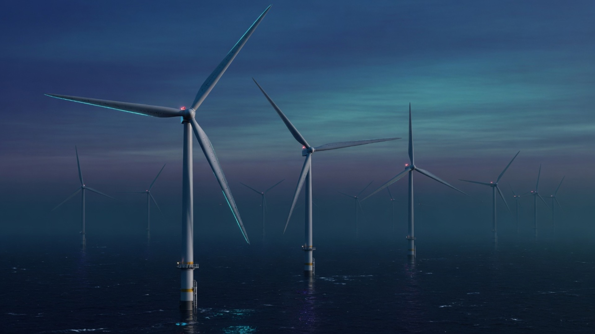
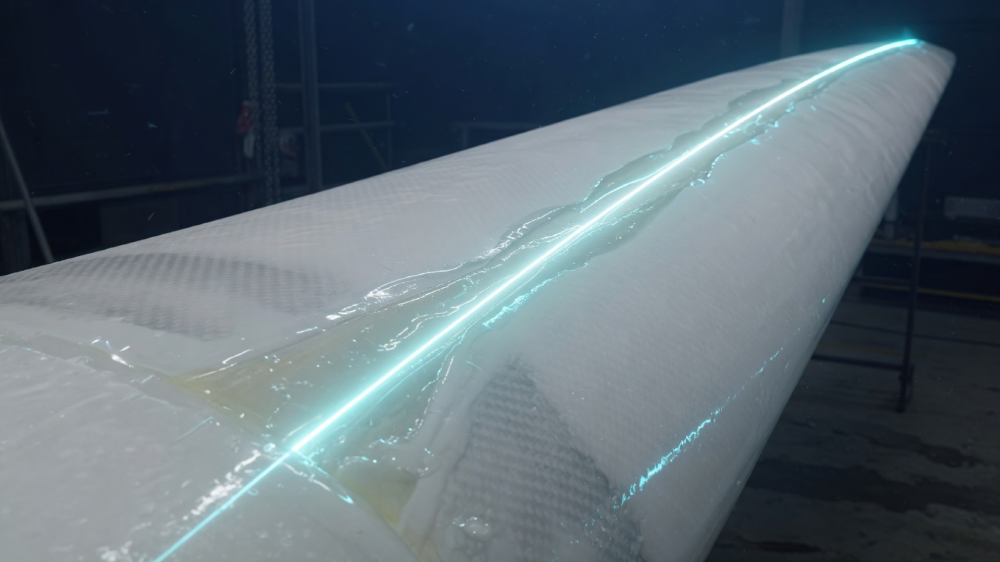
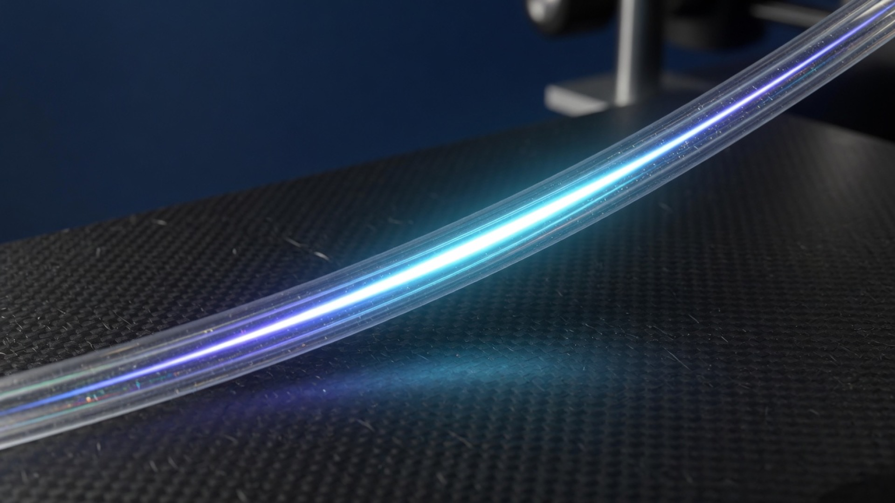
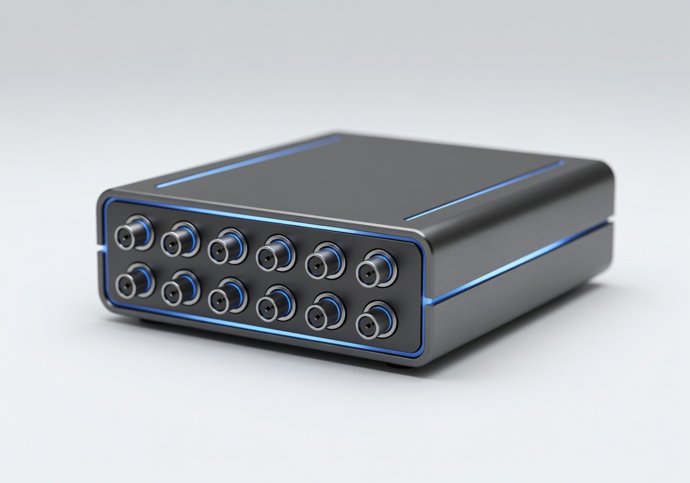
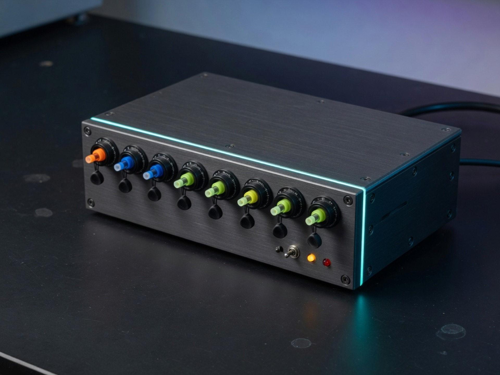
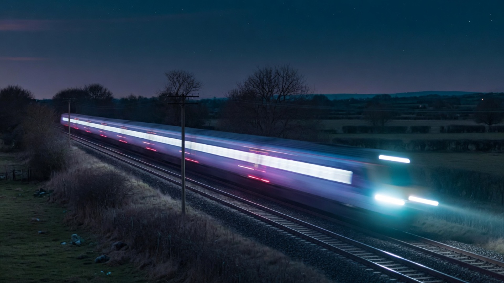

01 — Sensors
Embed the fibre
Arrays along spar caps, leading/trailing edges, and shear webs. Surface-bonded on existing blades or laminated into new composites.

Optical fibres see inside the structure — strain, load, moment, and twist — before damage becomes downtime. Independent of the OEM. Built for wind, then applied wherever composites and concrete cannot fail.
A Fiber Bragg Grating is a few millimetres of inscribed glass that reflects one wavelength. Stretch it, heat it, or twist the structure around it, and that wavelength shifts. Track the shift and you have strain, temperature, load, and damage — with no electricity at the sensing point.

The WT-04 monitor is the same stack we ship as BraggSoft: 4 blades × 8 fibres × 4 FBG stations, driven by laboratory cycle data.
Arrays along spar caps, leading/trailing edges, and shear webs. Surface-bonded on existing blades or laminated into new composites.
A compact interrogator tracks wavelength on every grating, converting light into calibrated strain, load, and temperature.
BraggSoft streams KPIs, digital fingerprints, and twist tests so operators act before a blade comes off the turbine.

Live View, Digital FingerPrint, and Twist Tests — the same interface we built on the 1 m instrumented blade dataset.

Surface and embedded FBG chains for blades, decks, and airframes.

Dynamic interrogator for vibration-critical blades, rail, and tests.

Long-term structural health monitoring with maximum sensor density.
Live KPIs, fingerprints, alarms, and CSV export for operators.
Internal damage, flapwise load, root moment, and twist on operating rotors.
Distributed strain and crack detection through construction and decades of service.

Track geometry, switches, and catenary — EMI-proof sensing along the corridor.